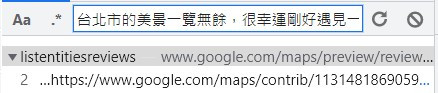
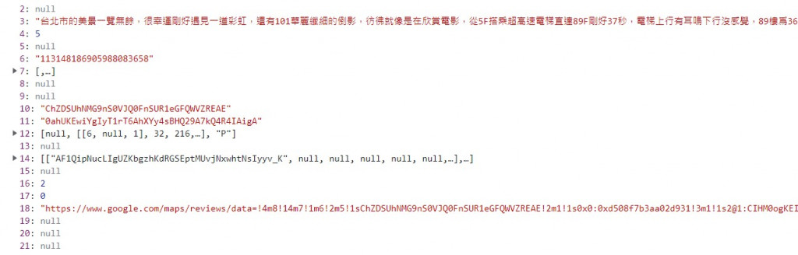
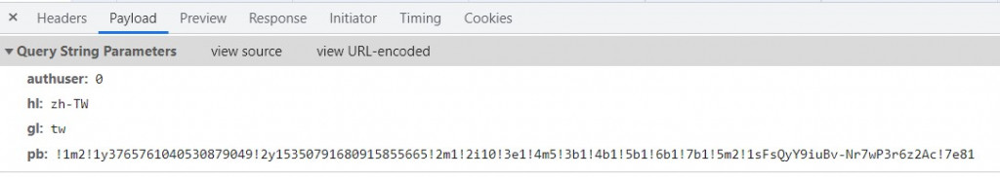
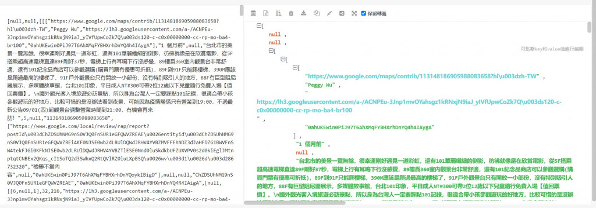
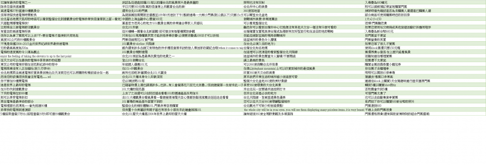

【day23】對Google評論自動分群-HDBSCAN與Sentence-BERT(下)
發布日期: 2022-09-27 22:36:02
原文連結: https://ithelp.ithome.com.tw/articles/10298788
對Google評論自動分群
今天的目錄如下:
- 1.取得Google地圖評論
- 2.S-BERT安裝與資料轉換
- 3.HDBSCAN安裝與資料合併
- 4.查看最終結果
取得Google地圖評論
今天我們要對"台北101觀景台"的google地圖評論自動分群，雖然這些評論都能用Google Map API取得，不過Google Map API使用太多次是要付費的，所以在這邊還是會使用爬蟲的方式取得我們需要的資料，這次的過程會和上次【day14】預測Hololive七期生的樣貌-生成式對抗網路(Generative Adversarial Network)(上)的方式差不多，但同樣的東西我當然不可能會讓你們看兩次，所以這次我會說明一些我常用的技巧，讓你能加快找到資料的速度。
之前在找資料時，都是透過網站載入的時間序來去尋找我們想要的AJAX網址，但這樣子的效率實在是太慢了，所以這次我們使用CTRL+F大法，直接搜尋我們要內容(這裡是文字)，就可以通過這個內容快速找到對應的AJAX網址。

接下來點擊我們剛剛搜尋到的結果，就能夠快速的找到這個資料存放在哪一個AJAX網址裡面

找到了AJAX網址後我們來分析網址，之前我們都是通過手動找到網址的參數，不過當AJAX網址太長時，整理起來就會非常困難，所以在這邊可以直接點到Payload的頁面上，就能夠快速的看到這些網址究竟需要傳送哪一些參數。

接下來我們就能夠開始撰寫程式了，這邊也與先前用的方式不同，之前我們是直接複製AJAX網站，但這樣子會有些缺點，第一個就是管理起來太不方便了，若需要一次修改很多參數，我們就會一直修改某一段的網址然後再重組，而且這樣的方式也很難讓我們觀看這些參數，所以我們可以直接將剛剛的參數寫成一個字典，這樣子不只能方便觀看，還能夠快速地修改參數值。
import requests
params = {
'authuser': '0',
'hl': 'zh-TW',
'gl': 'tw',
'pb': '!1m2!1y3765761040530879049!2y15350791680915855665!2m1!2i10!3e1!4m5!3b1!4b1!5b1!6b1!7b1!5m2!1sFsQyY9iuBv-Nr7wP3r6z2Ac!7e81'
}
r = requests.get('https://www.google.com/maps/preview/review/listentitiesreviews?' ,params = params)
用以上程式取得到JSON資料後，就可以來分析哪一個JSON的節點是我們想要的資料，在這邊需要通過一些JSON結構分析器(Preview也看的到)分析出JSON的結構，才能讓我們知道資料存放在哪些節點。不過我們需要注意一點，就是google map的JSON資料裡面前4碼是錯誤的，所以必須先將這4碼移除掉，分析器才能夠正常運作。

通過結構分析可以看到資料都存放在JSON的第三個節點中，但我們只需要評論資料，所以我們可以透過縮小節點條件的方式只保留文本資料。
r_json = json.loads(r[4:])
for i in r_json[2]:
print(i[3])
在爬蟲中必須要不斷的更換網址來達成翻頁的動作，所以我們需要去執行換頁的動作刷新URL來找到其中的規律。
!1m2!1y3765761040530879049!2y15350791680915855665!2m1!2i10!3e1!4m5!3b1!4b1!5b1!6b1!7b1!5m2!1sr98yY9iDLrfP2roP7sWVsAc!7e81'
!1m2!1y3765761040530879049!2y15350791680915855665!2m1!2i20!3e1!4m5!3b1!4b1!5b1!6b1!7b1!5m2!1sr98yY9iDLrfP2roP7sWVsAc!7e81'
可以看到第一頁的資料在2i10裡面，第二頁的資料在2i20裡面，所以只需要變換這個數字，就能夠達成翻頁的動作了。
最後我們設立停止條件來結束爬蟲(都是None時跳脫)
for i in r_json[2]:
if i[3] == None:
error_cnt+=1
else:
comments.append(i[3])
if error_cnt ==10:
flag = 1
if flag:
break
最後將這些評論存入CSV就完成我們今天要用的資料集了
google_comment_df = pd.DataFrame({"評價":comments})
google_comment_df.to_csv("台北101觀景台.csv")
爬蟲完整程式碼
import requests
import json
import pandas as pd
params = {
'authuser': '0',
'hl': 'zh-TW',
'gl': 'tw',
'pb': '!1m2!1y3765761040530879049!2y15350791680915855665!2m1!2i100!3e1!4m5!3b1!4b1!5b1!6b1!7b1!5m2!1sr98yY9iDLrfP2roP7sWVsAc!7e81'
}
cnt = 0
comments = []
error_cnt =0
flag = 0
while(1):
params['pb'] = f'!1m2!1y3765761040530879049!2y15350791680915855665!2m1!2i{cnt*10}!3e1!4m5!3b1!4b1!5b1!6b1!7b1!5m2!1sr98yY9iDLrfP2roP7sWVsAc!7e81'
r = requests.get('https://www.google.com/maps/preview/review/listentitiesreviews?' ,params=params).text
r_json = json.loads(r[4:])
print(cnt)
for i in r_json[2]:
if i[3] == None:
error_cnt+=1
else:
comments.append(i[3])
error_cnt = 0
if error_cnt ==10:
flag = 1
if flag:
break
cnt+=1
google_comment_df = pd.DataFrame({"評價":comments})
google_comment_df.to_csv("台北101觀景台.csv")
S-BERT安裝與使用
剛剛取得資料所以下一步就是將資料轉換成embedding的形式，才能夠被機器看懂，所以需先安裝S-BERT的函式庫
pip install sentence-transformers
這個函式庫的下載model的方式與hugging face相似，只是改成使用SentenceTransformer('model名稱')。不過S-BERT沒有專用的中文BERT model，所以我們直接用多國語言的版本來完成我們的轉換工作。
from sentence_transformers import SentenceTransformer
model = SentenceTransformer(sentence-transformers/distiluse-base-multilingual-cased-v2)
有了model後我們只需要剛讀取CSV檔案透過一行程式碼，就能把每一個句子都更換成embedding的格式啦
data = pd.read_csv("台北101觀景台.csv")['評價'].tolist()
embeddings = model.encode(data)
HDBSCAN安裝與資料合併
接下來我們需要安裝HDBSCAN，如果是跟我一樣是windows的用戶在安裝HDBSCAN之前必須下載
Visual Studio這樣才能夠使用pip安裝HDBSCAN。
pip install hdbscan
接下來隨便調整min_cluster_size就能夠分群了，因為HDBSCAN分群的效果較穩定，所以並不需要在HDBSCAN上做太多的調整，而是將重點放在合併主題的方式上。
cluster = hdbscan.HDBSCAN(min_cluster_size = 15).fit(embeddings)
分群完畢後你肯定會發現結果實在太多了，所以我們還需要把相似的主題合併為一個主題，在這裡可以使用TF-IDF或是相似度檢測的方式來合併。在這裡我會試範如何使用相似度檢測的方法合併主題，若對TF-IDF的方式有興趣的人可以在S-BERT的官方文件中找到程式範例點我前往。
這邊我採用一種比較暴力的方式，來交給S-BERT做相似度檢測
1.將所有主題內的句子合併成一個文件
2.使用餘弦相似度計算個主題之間的相似度
3.將大於0.5以上的文本合併
4.重複以上動作直到沒有結果符合步驟3
首先我們先將所有的文本合併在一起
topics = {}
for comment,label in zip(data, cluster.labels_):
topics[label]+=' ' + comment
corpus = [i for i in topics.values()]
接下來把文本轉換成embedding的形式，並且通過餘弦相似度來判別各主題之間的相似度
epochs = 100
for epoch in range(epochs):
#找到當前該被查詢的主題
i = epoch % len(corpus)
corpus_embeddings = model.encode(corpus)
query_embeddings = model.encode(corpus[i])
#計算該主題與其他主題的相似度
for query, query_embedding in zip(queries[i], query_embeddings):
#計算餘弦相似度
distances = scipy.spatial.distance.cdist([query_embedding], corpus_embeddings, "cosine")[0]
取得了個主題的相似度後，先將分數由高到低的排列來找到最相似的主題，在這邊我們只合併最相似的主題，這是為了防止這些主題過度合併。
#將分數由高排到低
results = zip(range(len(distances)), distances)
results = sorted(results, key=lambda x: x[1])
#找到最佳的結果
for idx, distance in results[0]:
#只要分數>0.5就合併該主題
if 1-distance > 0.5:
corpus[i]+=corpus[idx]
corpus.remove(corpus[idx])
最後結果
合併完後我們需要將這些句子還原，因為合併時的方式是利用空白做分割，所以只需要用split()分割文字將結果還原就能存入CSV中觀看結果了。
results = {}
for cnt,i in enumerate(corpus):
results[cnt] = i.split(' ')
results_df = pd.DataFrame.from_dict(results, orient = 'index')
results_df = results_df.transpose()
results_df.to_csv('output_result.csv')

由左往右數，可以看到主題1是關於101的電梯設備，主題3是觀景台的風景，主題4是門票的價格，在這個結果之中，除了主題2的分類較混亂，其餘的結果都是良好了，不過這個程式還有許多能改善的地方。
例如我們直接採用embedding的結果分群就會因為維度太大(768維)，導致HDBSCAN分群效果沒有達到預期的成果，如果使用PCA、T-SNE等降維方式，不僅能改善這個問題，還能增加運算速度。
再來是相似度檢測的部分，在這裡我是直接將文字全部當作一個句子去計算相似度，但這樣子在一個句子就會包含太多訊息，這樣會導致S-BERT無法很好的辨識出結果，若比對個主題單一句子之間的相似度，效果肯定會比現在好很多。
最後就是文字前處理的部分，在這程式中我完全沒有做任何的資料前處理，若是能移除掉一些表情符號、URL、標點符號，結果應該會更好。
完整程式碼
from sentence_transformers import SentenceTransformer
import scipy.spatial
import hdbscan
model = SentenceTransformer(sentence-transformers/distiluse-base-multilingual-cased-v2)
data = pd.read_csv("台北101觀景台.csv")['評價'].tolist()
embeddings = model.encode(data)
cluster = hdbscan.HDBSCAN(min_cluster_size = 15).fit(embeddings)
topics = {}
for comment,label in zip(data, cluster.labels_):
topics[label]+=' ' + comment
corpus = [i for i in topics.values()]
corpus_embeddings = model.encode(corpus)
epochs = 100
for epoch in range(epochs):
#找到當前該被查詢的主題
i = epoch % len(corpus)
query_embeddings = model.encode(corpus[i])
#計算該主題與其他主題的相似度
for query, query_embedding in zip(queries[i], query_embeddings):
#計算餘弦相似度
distances = scipy.spatial.distance.cdist([query_embedding], corpus_embeddings, "cosine")[0]
#將分數由高排到低
results = zip(range(len(distances)), distances)
results = sorted(results, key=lambda x: x[1])
#找到最佳的結果
for idx, distance in results[0]:
#只要分數>0.5就合併該主題
if 1-distance > 0.5:
corpus[i]+=corpus[idx]
corpus.remove(corpus[idx])
results = {}
for cnt,i in enumerate(corpus):
results[cnt] = i.split(' ')
results_df = pd.DataFrame.from_dict(results, orient = 'index')
results_df = results_df.transpose()
results_df.to_csv('output_result.csv')
課程中的程式碼都能從我的github專案中看到
https://github.com/AUSTIN2526/learn-AI-in-30-days